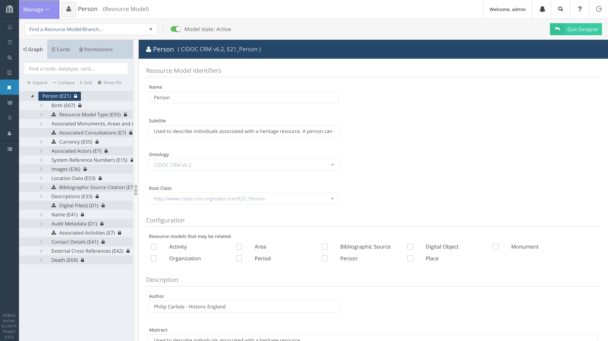
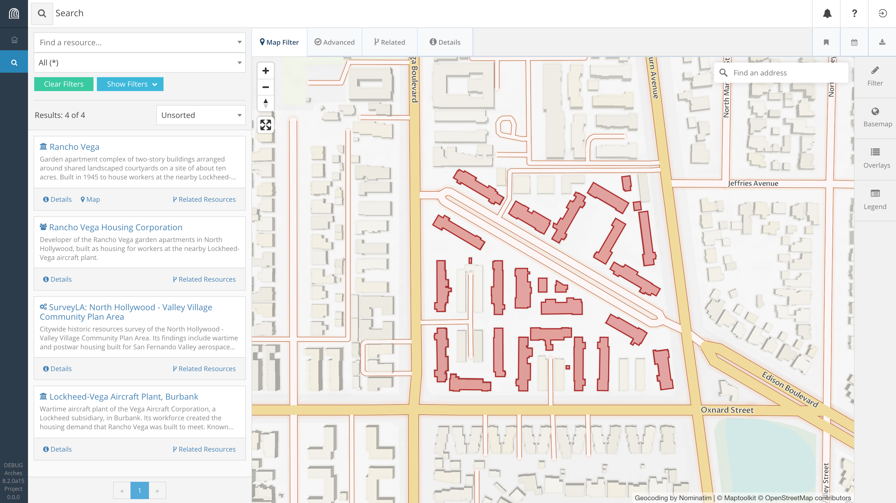
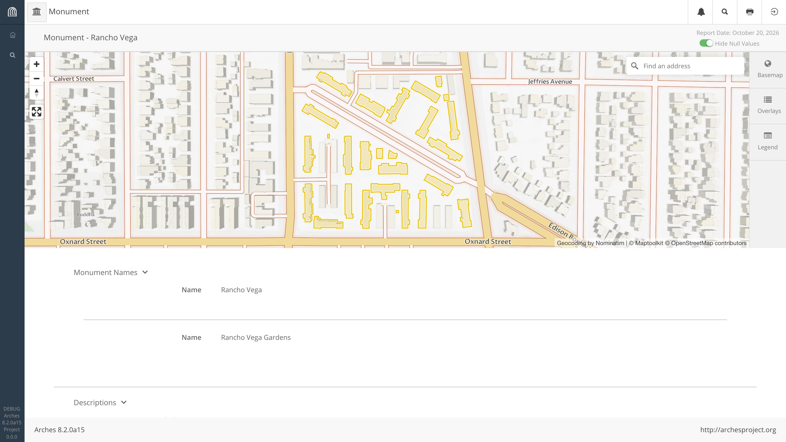
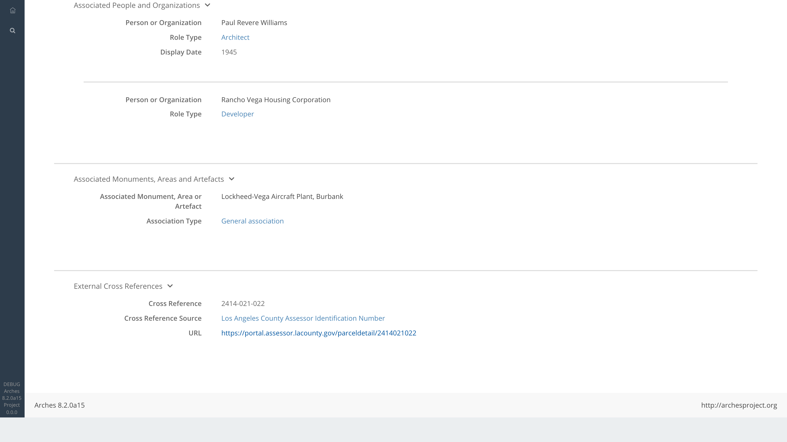
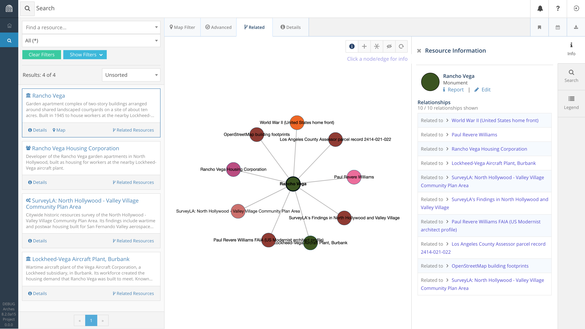
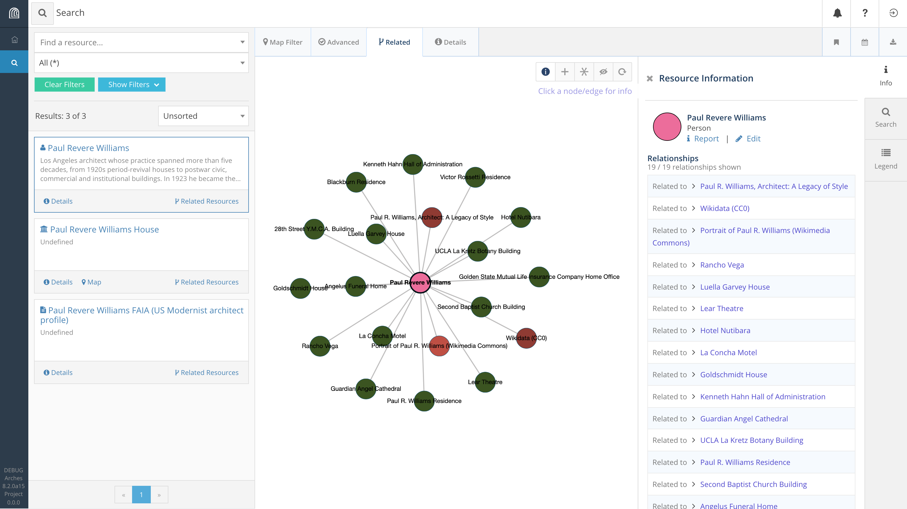
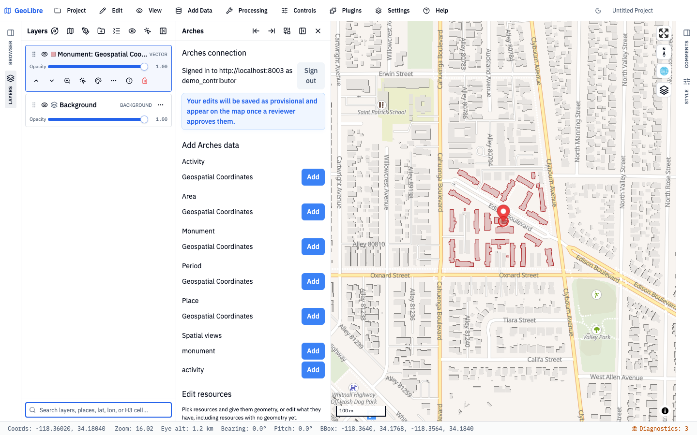
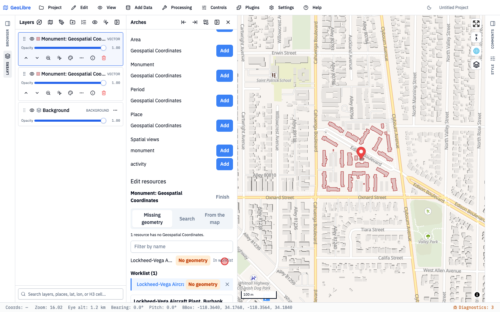
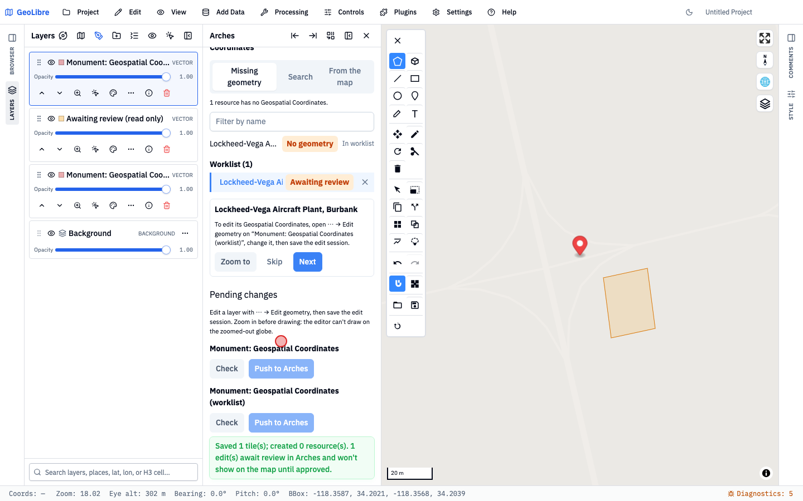
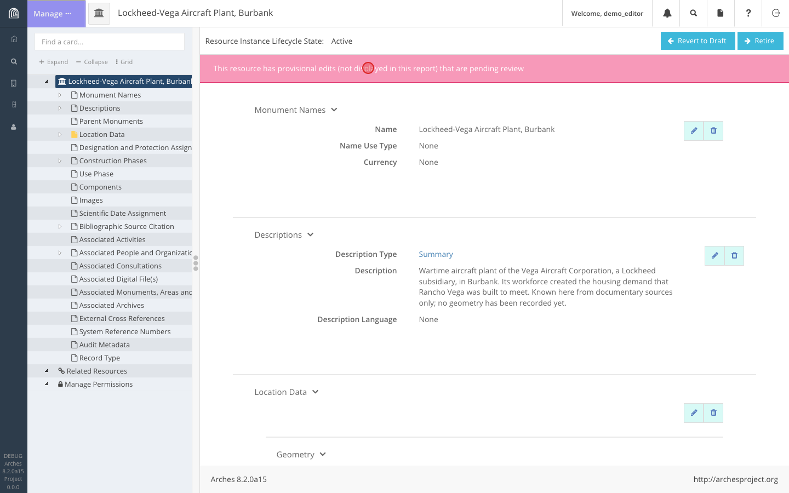

Rancho Vega, North Hollywood. Photo: HistoricPlacesLA
AIN 2414-021-022 SitusAddress 10403 EDISON WAY UseDescription Five or more apartments YearBuilt1 1945 Units1 126 Designation(none)
LA County Assessor parcel record. The City's Historic-Cultural Monument layer has no architect field at all.
Same place, with its relationships
Rancho Vega, in context
None of that is an attribute of the geometry. All of it is a relationship.
01 · The gap
You've seen this table before
ID
TYPE
BUILT_BY
NOTES
DATE_DESC
014
culvert
City Engineering
rehab noted '19
ca. 1970s
015
bridge
unknown
-
1932?
016
pump_stn
Contractor X
see attached
2004
A typical asset table: familiar, fast, and complete by its own definition.
Who verified "built_by"?
What report backs up "notes"?
What vocabulary defines "type"?
01 · The gap
The cost of flattening context
Provenance and authorship
Who created, verified or last changed this, and on what authority.
Event history
Construction, survey, alteration, demolition: the events that give a record meaning.
Linked documentation
The report, photo or drawing that a "notes" value is quietly standing in for.
Controlled vocabulary
A shared definition of "type" that means the same thing in every dataset.
And uncertainty: "ca. 1920s" and fuzzy extents don't fit in a date column or a crisp polygon.
To be clear
GIS features are fast, familiar and powerful. Keep them.
The question is where the context lives, and whether your GIS can still reach it.
02 · The model
Arches: built to hold context
An open-source data management platform, developed with the Getty Conservation Institute and World Monuments Fund, to answer a hard question: how do you describe cultural heritage?
Uncertain dates, fuzzy extents, deep description
Dense relationships between places, people, events and evidence
Records that must outlive the software that holds them
Deployments from a few records to roughly 14 million resources
02 · The model
Every resource, in context
Geometry is a first-class value, but it's one node among many, not the root of the model.
02 · The model
Graphs inside resources, and between them
Inside a resource model
Between resources
Every node-edge-node path is a triple: subject → predicate → object, for example Production → P14 carried out by → Paul R. Williams.
The model in Arches' graph designer

The arches-her Person model: each branch has a CIDOC CRM class (E21 Person, E67 Birth, E41 Appellation...).
02 · The model
Standards, not ad hoc
CIDOC CRM
The ontology for cultural heritage and beyond, adopted as ISO 21127:2023.
Controlled vocabularies
SKOS thesauri managed in Arches. Searching "Apartment" can also find "Garden Apartment".
JSON-LD and RDF
Every resource exports as linked data, so it means the same thing to any system that reads it.
The demo uses the community's arches-her models, built for Historic Environment Records, plus a few US terms.
02 · The model
Arches speaks GIS
PostGIS
Geometries live in PostGIS, like the rest of your data.
Spatial views
Geometry plus chosen attributes as database views that QGIS, GeoServer and OGC services read like any table.
APIs
GeoJSON and Mapbox vector tiles straight from the platform.
GeoLibre plugin
Live, permission-aware loading and editing of Arches geometry in GeoLibre, the open-source GIS that runs in the browser, on the desktop and on mobile.
That's what the demo shows next.
Geometry and attributes stay where you'd expect. The relationship graph sits alongside them.
03 · Live demo
Arches + GeoLibre, with real Los Angeles data
Screen an area: what's here, and why does it matter?
Follow the relationships: from a parcel to an architect to a city-wide network
Bring it into your GIS: GeoLibre, live, in both directions
1,343 LA Historic-Cultural Monuments (City Planning) · Wikidata · LA County Assessor · OpenStreetMap
Demo backup · The whole demo, recorded (3 min)

Demo recap · A · Arches · 1/9
Screen an area
A search over a proposed corridor in North Hollywood returns Rancho Vega and the records linked to it: its developer, the SurveyLA survey and the Lockheed-Vega plant.
So far, any GIS can do this.

Demo recap · A · Arches · 2/9
An unremarkable record
On its own, Rancho Vega looks ordinary: 27 building footprints, garden apartments, built in 1945, not a designated landmark.
Its geometry is one value among many.

Demo recap · A · Arches · 3/9
…and who it's connected to
Paul R. Williams as Architect. The Rancho Vega Housing Corporation as Developer. Associated with the Lockheed-Vega plant. Cross-referenced to the county assessor's parcel.
Each of these is a typed relationship, not a text field.

Demo recap · A · Arches · 4/9
Rancho Vega's relationships
Ten relationships: the architect, the developer, the plant it housed workers for, the survey that identified it, World War II, and the four sources behind those claims.
This network is what makes Rancho Vega significant.

Demo recap · A · Arches · 5/9
Follow the architect
Williams links to 16 works. Seven are LA Historic-Cultural Monuments; the City's own monument layer has no architect field to show that.
Rancho Vega is one of the few that isn't designated.

Demo recap · B · GeoLibre · 6/9
Arches data in GeoLibre
GeoLibre, an open-source GIS that runs entirely in the browser, loads the Arches Monument layer through the plugin. Same footprints, same permissions.
The relationships stay in Arches; the GIS still gets the geometry.

Demo recap · B · GeoLibre · 7/9
A record with no geometry
The plugin asks Arches for records with no geometry and finds one: the Lockheed-Vega plant, known only from documentary sources.
No spatial view, and no map, can show a record that has no geometry yet.

Demo recap · B · GeoLibre · 8/9
Resource-first editing
A contributor draws a rough footprint near the Burbank airport and pushes it to Arches. Because they aren't a reviewer, it's saved as a provisional edit.
The record existed semantically before it existed spatially.

Demo recap · B · GeoLibre · 9/9
Back in Arches, for review
A reviewer opens the plant in Arches and sees the new geometry waiting for approval, along with the rest of the record's context.
Context was added without bypassing governance.
04 · The payoff
Legible, not just fast
In a flat table
BLT_BY: "P. Williams"
For people: readable relationships, backed by evidence
For machines: explicit classes and properties, not column names to decode